Specifications
Torque Specifications
| Item | Nm | lb-ft |
|---|---|---|
| Crankshaft position (CKP) sensor | 7 | 5 |
| Camshaft position (CMP) sensor | 9 | 7 |
| Cylinder head temperature (CHT) sensor | 10 | 7 |
| Manifold absolute pressure and temperature (MAPT) sensor | 3 | 2 |
| Engine oil pressure (EOP) sensor | 15 | 11 |
| Engine control module (ECM) | 10 | 7 |
Electronic Engine Controls
COMPONENT LOCATION SHEET 1
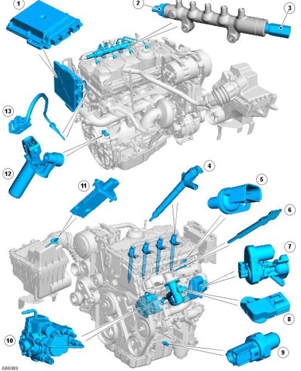
| Item | Part Number | Description |
|---|---|---|
| 1 | ECM (engine control module) | |
| 2 | Fuel pressure sensor | |
| 3 | Pressure limiting valve | |
| 4 | Injectors | |
| 5 | CMP (camshaft position) sensor | |
| 6 | Glow plugs | |
| 7 | EGR (exhaust gas recirculation) valve | |
| 8 | MAP (manifold absolute pressure) sensor | |
| 9 | Oil pressure switch | |
| 10 | Fuel pump | |
| 11 | MAF (mass air flow) /IAT (intake air temperature) sensor | |
| 12 | CKP (crankshaft position) sensor | |
| 13 | CHT (cylinder head temperature) sensor |
COMPONENT LOCATION SHEET 2
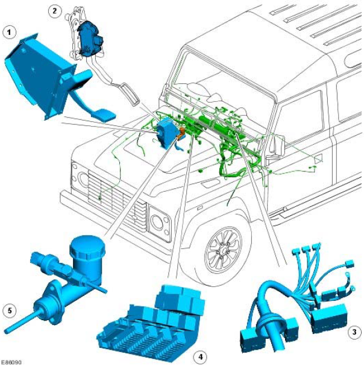
| Item | Part Number | Description |
|---|---|---|
| 1 | Brake pedal switch | |
| 2 | APP (accelerator pedal position) sensor | |
| 3 | BJB (battery junction box) | |
| 4 | CJB (central junction box) | |
| 5 | Clutch switch |
OVERVIEW
The engine management system is controlled by an ECM (engine control module) and is able to monitor, adapt and precisely control the fuel injection. The ECM (engine control module) uses multiple sensor inputs and precision control of actuators to achieve optimum performance during all driving conditions.
The ECM (engine control module) controls fuel delivery to all 4 cylinders via a Common Rail (CR) injection system. The CR system uses a fuel rail to accumulate highly pressurized fuel and feed the 4, electronically controlled injectors. The fuel rail is located in close proximity to the injectors, which assists in maintaining full system pressure at
each injector at all times.
The ECM (engine control module) uses the drive by wire principle for acceleration control. There are no control cables or physical connections between the accelerator pedal and the engine. Accelerator pedal demand is communicated to the ECM (engine control module) by two potentiometers located in an APP (accelerator pedal position) sensor. The ECM (engine control module) uses the two signals to determine the position, rate of movement and direction of movement of the pedal. The ECM (engine control module) then uses this data, along with other engine information from other sensors, to achieve the optimum engine response.
The ECM (engine control module) processes information from the following input sources:
- CKP (crankshaft position) sensor
- CMP (camshaft position) sensor
- Manifold air temperature and pressure
- Cylinder head temperature
- Oil pressure
- Inlet air flow and temperature
- Fuel temperature
The ECM (engine control module) outputs controlling signals to the following sensors and actuators:
- Fuel injectors
- Cooling fan solenoid
- Electric vane controlled turbo
- Fuel pressure control valve
- Fuel volume control valve
- Electronic EGR (exhaust gas recirculation)
- Glow plugs
ECM (engine control module)
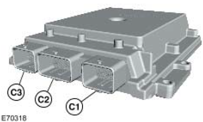
| Item | Part Number | Description |
|---|---|---|
| C1 | Connector 1 | |
| C2 | Connector 2 | |
| C3 | Connector 3 |
The ECM (engine control module) connected to the vehicle harnesses via three connectors. The ECM (engine control module) contains data processors and memory microchips. The output signals to the actuators are in the form of ground paths provided by driver circuits within the ECM (engine control module). The ECM (engine control module) driver circuits produce heat during normal operation and dissipate this heat via the casing. Some sensors receive a regulated voltage supplied by the ECM (engine control module). This avoids incorrect signals caused by voltage drop during cranking.
The ECM (engine control module) performs self diagnostic routines and stores fault codes in its memory. These fault codes and diagnostics can be accessed using the Land Rover recommended diagnostic tool. If the ECM (engine control module) is to be replaced, the new ECM (engine control module) is supplied 'blank' and must be configured to the vehicle using the Land Rover recommended diagnostic tool. A 'flash' EEPROM (electrically erasable programmable read only memory) allows the ECM (engine control module) to be externally configured, using the Land Rover recommended diagnostic tool, with market specific or new tune information up to 14 times. If a fifteenth update is required the ECM (engine control module) must be replaced. The current engine tune data can be accessed and read using the Land Rover recommended diagnostic tool.
When a new ECM (engine control module) is fitted, it must also be synchronized to the immobilization control module using the Land Rover recommended diagnostic tool. ECM (engine control module) 's cannot be 'swapped' between vehicles.
The ECM (engine control module) is connected to the engine sensors which allow it to monitor the engine operating conditions. The ECM (engine control module) processes these signals and decides the actions necessary to maintain optimum engine performance in terms of driveability, fuel efficiency and exhaust emissions. The memory of the ECM (engine control module) is programmed with instructions for how to control the engine, this known as the strategy. The memory also contains data in the form of maps which the ECM (engine control module) uses as a basis for fueling and emission control. By comparing the information from the sensors to the to the data in the maps, the ECM (engine control module) is able to calculate the various output requirements. The ECM (engine control module) contains an adaptive strategy which updates the system when components vary due to production tolerances or ageing.
The ECM (engine control module) receives a vehicle speed signal. Vehicle speed is an important input to the ECM (engine control module) strategies. The frequency of this signal changes according to road speed.
CRANKSHAFT POSITION SENSOR (CKP)
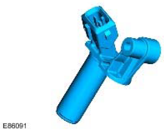
The CKP (crankshaft position) sensor is located at the rear of the engine block on the left hand side. The sensor tip is aligned with a magnetic trigger which is attached to the crankshaft. The reluctor is a press fit on the end of the crankshaft. The trigger wheel must be carefully aligned to the crankshaft to ensure correct timing. The sensor produces a square wave signal, the frequency of which is proportional to engine speed.
The ECM (engine control module) monitors the CKP (crankshaft position) sensor signal and can detect engine over- speed. The ECM (engine control module) counteracts engine over-speed by gradually fading out speed synchronized functions. The CKP (crankshaft position) sensor is a Hall effect sensor. The sensor measures the magnetic field variation induced by the magnetized trigger wheel.
The trigger wheel has two missing teeth representing 12° of crankshaft rotation. The two missing teeth provide a reference point for the angular position of the crankshaft.
When the space with the two missing teeth pass the sensor tip, a gap in the signal is produced which the ECM (engine control module) uses to determine the crankshaft position. The air gap between the sensor tip and the ring is important to ensure correct signals are output to the ECM (engine control module). The recommended air gap between the CKP (crankshaft position) sensor and the trigger wheel is 0.4 mm- 1.5 mm.
The ECM (engine control module) uses the signal from the CKP (crankshaft position) sensor for the following functions:
- Synchronisation.
- Determine fuel injection timing.
- Enable the fuel pump relay circuit (after the priming period).
- Produce an engine speed signal which is broadcast on the CAN (controller area network) bus for use by other systems.
CMP
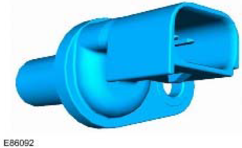
The CMP (camshaft position) is located towards the rear of the left hand side of the cylinder head. The sensor tip protrudes through the face to pick up on the reluctor behind the camshaft pulley.
The sensor is a Hall effect sensor which used by the ECM (engine control module) at engine start-up to synchronize the ECM (engine control module) with the CKP (crankshaft position) sensor signal. The ECM (engine control module) does this by using the CMP (camshaft position) sensor signal to identify number one cylinder to ensure the correct injector timing. Once the ECM (engine control module) has established the injector timing, the CMP (camshaft position) sensor signal is no longer used.
The CMP (camshaft position) sensor receives a 5V supply from the ECM (engine control module). Two further connections to the ECM (engine control module) provide ground and signal output.
If a fault occurs, an error is registered in the ECM (engine control module). Two types of failure can occur; camshaft signal frequency too high or total failure of the camshaft signal. The error recorded by the ECM (engine control module) can also relate to a total failure of the crankshaft signal or crankshaft signal dynamically implausible. Both components should be checked to determine the cause of the fault.
If a fault occurs with the CMP (camshaft position) sensor when the engine is running, the engine will continue to run but the ECM (engine control module) will deactivate boost pressure control. Once the engine is switched off, the engine will crank but will not restart while the fault is present.
GLOW PLUGS
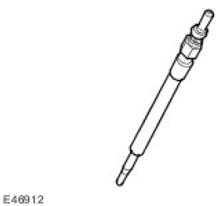
Four glow plugs are located in the cylinder head, on the inlet side. The glow plugs and the glow plug relay are a vital part of the engine starting strategy. The glow plugs heat the air inside the cylinder during cold starts to assist combustion. The use of glow plugs helps reduce the amount of additional fuel required on start-up, and consequently reduces the emission of black smoke. The use of glow plugs also reduces the amount of injection advance required, which reduces engine noise, particularly when idling with a cold engine.
There are three phases of glow plug activity:
- Pre-heat
- During crank
- Post heat
The main part of the glow plug is a tubular heating element which protrudes into the combustion chamber of the engine. The heating element contains a spiral filament encased in magnesium oxide powder. At the tip of the tubular heating element is the heater coil. Behind the heater coil, and connected in series, is a control coil. The control coil regulates the heater coil to ensure that it does not overheat.
Pre-heat is the length of time the glow plugs operate prior to engine cranking. The ECM (engine control module) controls the pre-heat time based on ECT (engine coolant temperature) sensor output and battery voltage. If the ECT (engine coolant temperature) sensor fails, the ECM (engine control module) will use the IAT (intake air temperature) sensor value as a default value. The pre-heat duration is extended if the coolant temperature is low and the battery is not fully charged.
Post heat is the length of time the glow plugs operate after the engine starts. The ECM (engine control module) controls the post heating time based on ECT (engine coolant temperature) sensor output. The post heat phase reduces engine noise, improves idle quality and reduces hydrocarbon emissions.
When the ignition is switched on to position II, the glow plug warning lamp illuminates in the instrument cluster. The glow-lamp is activated separately from the glow-plugs, so is not illuminated during or after start. The plugs can still be ON when the lamp is off in these two phases.
In the event of glow plug failure, the engine may be difficult to start and excessive smoke emissions may be observed after starting.
The glow plug warning lamp also serves a second function within the EDC system. If a major EDC system fault occurs, the glow plug warning lamp will be illuminated until the fault is rectified. The driver must seek attention to the engine management system at a Land Rover dealer as soon as possible.
INJECTORS
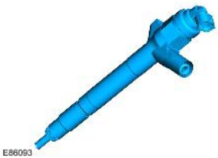
There are 4 electronic fuel injectors (one for each cylinder) located in a central position between the four valves of each cylinder. The ECM (engine control module) divides the injectors into two banks of 4 with cylinders.
Each injector is supplied with pressurized fuel from the fuel rail and delivers finely atomized fuel directly into the combustion chambers. Each injector is individually controlled by the ECM (engine control module) which operates each injector in the firing order and controls the injector opening period via PWM (pulse width modulation) signals. Each injector receives a 12V supply from the ECM (engine control module) and, using programmed injection/timing maps and sensor signals, determines the precise pilot and main injector timing for each cylinder. If battery voltage falls to between 6 and 9V, fuel injector operation is restricted, affecting emissions, engine speed range and idle speed. In the event of a failure of a fuel injector, the following symptoms may be observed:
- Engine misfire
- Idle irregular
- Reduced engine performance
- Reduced fuel economy
- Difficult starting
- Increased smoke emissions.
The ECM (engine control module) monitors the wires for each injector for short circuit and open circuit, each injector and the transient current within the ECM (engine control module). If a defect is found, an error is registered in the ECM (engine control module) for the injector in question.
CHT (cylinder head temperature) SENSOR
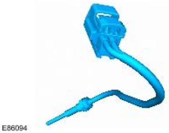
The CHT (cylinder head temperature) sensor is located in the top hose at the coolant manifold junction. The ECT (engine coolant temperature) sensor provides the ECM (engine control module) and the instrument cluster with engine coolant temperature status.
The ECM (engine control module) uses the temperature information for the following functions:
- Fueling calculations
- Limit engine operation if engine coolant temperature becomes too high
- Cooling fan operation
- Glow plug activation time.
The instrument cluster uses the temperature information for temperature gauge operation. The CHT (cylinder head temperature) signal is also transmitted on the CAN (controller area network) bus by the instrument cluster for use by other systems.
The ECM (engine control module) CHT (cylinder head temperature) sensor circuit consists of an internal voltage divider circuit which incorporates an NTC (negative temperature coefficient) thermistor. As the CHT (cylinder head temperature) rises the resistance through the sensor decreases and vice versa. The output from the sensor is the change in voltage as the thermistor allows more current to pass to earth relative to the temperature of the coolant.
The ECM (engine control module) compares the signal voltage to stored values and adjusts fuel delivery to ensure optimum driveability at all times. The engine will require more fuel when it is cold to overcome fuel condensing on the cold metal surfaces inside the combustion chamber. To achieve a richer air/fuel ratio, the ECM (engine control module) extends the injector opening time. As the engine warms up the air/fuel ratio is leaned off.
The input to the sensor is a 5V reference voltage supplied from the voltage divider circuit within the ECM (engine control module). The ground from the sensor is also connected to the ECM (engine control module) which measures the returned current and calculates a resistance figure for the sensor which relates to the coolant temperature.
The following table shows CHT (cylinder head temperature) values and the corresponding sensor resistance and voltage values.
Coolant Temperature Sensor Response
| Temperature (Degrees Celsius) | Resistance (Kohms) | Voltage (Volts) |
|---|---|---|
| -40 | 925 | 4.54 |
| -30 | 496 | 4.46 |
| -20 | 277 | 4.34 |
| -10 | 160 | 4.15 |
| 0 | 96 | 3.88 |
| 10 | 59 | 3.52 |
| 20 | 37 | 3.09 |
| 30 | 24 | 2.62 |
| 40 | 16 | 2.15 |
| 50 | 11 | 1.72 |
| 60 | 7.5 | 1.34 |
| 70 | 5.6 | 1.04 |
| 80 | 3.8 | 0.79 |
| 90 | 2.9 | 0.64 |
| 100 | 2.08 | 0.49 |
| 110 | 1.56 | 0.38 |
| 120 | 1.19 | 0.29 |
| 130 | 0.918 | 0.22 |
| 140 | 0.673 | 0.17 |
| 150 | 0.563 | 0.14 |
If the CHT (cylinder head temperature) sensor fails, the following symptoms may be observed:
- Difficult cold start.
- Difficult hot start.
- Engine performance compromised.
- Temperature gauge inoperative or inaccurate reading.
In the event of CHT (cylinder head temperature) sensor signal failure, the ECM (engine control module) applies a default value of 80° Celsius (176°F) coolant temperature for Fueling purposes. The ECM (engine control module) will also permanently operate the cooling fan at all times when the ignition is switched on, to protect the engine from overheating.
OIL PRESSURE SWITCH
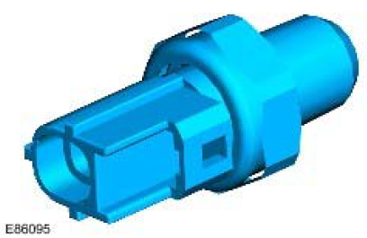
The oil pressure switch, located in the oil cooler assembly, connects a ground input to the instrument cluster when oil pressure is present. The switch operates at a pressure of 0.15 to 0.41 bar (2.2 to 5.9 Psi).
FUEL RAIL PRESSURE SENSOR
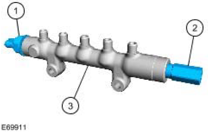
| Item | Part Number | Description |
|---|---|---|
| 1 | Fuel pressure sensor | |
| 2 | Pressure limiting valve | |
| 3 | Fuel rail |
The fuel rail pressure sensor is located forward end of the fuel rail. The fuel rail pressure sensor measures the pressure of the fuel in the fuel rail. This input is then used by the ECM (engine control module) to control the amount of fuel delivered to the fuel rail.
FUEL RAIL PRESSURE RELIEF VALVE
The fuel rail pressure relief valve is located at the rear end of the fuel rail. To prevent damage to the high pressure fuel system, the valve opens when the fuel pressure in the rail reaches approximately 2000 bar. The ECM (engine control module) detects the valve opening and sends a MIL (malfunction indicator lamp) request to the instrument cluster.
Once the valve has been opened it needs to be replaced.
FUEL TEMPERATURE SENSOR
The fuel temperature sensor is located in the high pressure fuel pump.
The sensor is an NTC (negative temperature coefficient) sensor which is connected to the ECM (engine control module) by two wires. The ECM (engine control module) fuel temperature sensor circuit consists of an internal voltage divider circuit which incorporates an NTC (negative temperature coefficient) thermistor. As the fuel temperature rises the resistance through the sensor decreases. The output from the sensor is the change in voltage as the thermistor allows more current to pass to earth relative to the temperature of the fuel.
The ECM (engine control module) monitors the fuel temperature constantly. If the fuel temperature exceeds 85° Celsius (185°F), the ECM (engine control module) invokes an engine 'derate' strategy. This reduces the amount of fuel delivered to the injectors in order to allow the fuel to cool. When this occurs, the driver may notice a loss of performance.
Further fuel cooling is available by a bi-metallic valve diverting fuel through the fuel cooler when the fuel reaches a predetermined temperature. In hot climate markets, an electrically operated cooling fan is positioned in the air intake ducting to the fuel cooler. This is controlled by a thermostatic switch, which switches the fan on and off when the fuel
reaches a predetermined temperature.
The wires to the fuel sensor are monitored by the ECM (engine control module) for short and open circuit. The ECM (engine control module) also monitors the 5V supply. If a failure occurs a fault is recorded in the ECM (engine control module) memory and the ECM (engine control module) uses a default fuel pressure value.
If the ECM (engine control module) registers an 'out of range' deviation between the pressure signal from the sensor and the pre-programmed 'set point' a fault is stored in the ECM (engine control module) memory. Depending on the extent of the deviation, the ECM (engine control module) will reduce the injection quantity, stop the engine immediately or prevent further engine starting.
MAF (mass air flow) SENSOR
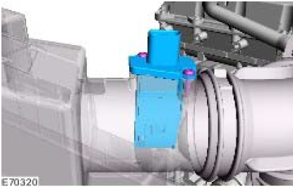
Two MAF (mass air flow) sensor is located on the intake air duct directly after the air filter box. The sensor is housed in a plastic molding which is connected between the intake manifold and the air intake pipe.
The MAF (mass air flow) sensor works on the hot film principle. Two sensing elements are contained within a film. One element is maintained at ambient (air intake) temperature, e.g. 25°Celsius (77°F). The other element is heated to 200°Celsius (392°F) above the ambient temperature, e.g. 225°Celsius (437°F). Intake air entering the engine passes through the MAF (mass air flow) sensor and has a cooling effect on the film. The ECM (engine control module) monitors the current required to maintain the 200°Celsius (392°F) differential between the two elements and uses the differential to provide a precise, non-linear, frequency based signal which equates to the volume of air being drawn into the engine.
The MAF (mass air flow) sensor output is a digital signal proportional to the mass of the incoming air. The ECM (engine control module) uses this data, in conjunction with signals from other sensors and information from stored fueling maps, to determine the precise fuel quantity to be injected into the cylinders. The signal is also used as a feedback signal for the EGR (exhaust gas recirculation) system.
The MAF (mass air flow) sensor receives a 12V supply from the BJB (battery junction box) and a ground connection via the ECM (engine control module). Two further connections to the ECM (engine control module) provide a MAF (mass air flow) signal and IAT (intake air temperature) signal.
The ECM (engine control module) checks the calculated air mass against the engine speed. If the calculated air mass is not plausible, the ECM (engine control module) uses a default air mass figure which is derived from the average engine speed compared to a stored characteristic map. The air mass value will be corrected using values for boost pressure, atmospheric pressure and air temperature.
If the MAF (mass air flow) sensor fails the ECM (engine control module) implements the default strategy based on engine speed. In the event of a MAF (mass air flow) sensor signal failure, any of the following symptoms may be observed:
- Difficult starting
- Engine stalls after starting
- Delayed engine response
- Emission control inoperative
- Idle speed control inoperative
- Reduced engine performance.
MAPT (manifold absolute pressure and temperature) SENSOR
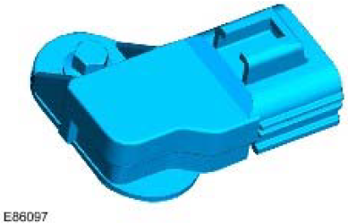
The MAPT (manifold absolute pressure and temperature) sensor is located post turbo after the electric throttle valves. The sensor provides a voltage signal to the ECM (engine control module) relative to the intake manifold pressure. The MAPT (manifold absolute pressure and temperature) sensor has a three pin connector which is connected to the ECM (engine control module) and provides a 5V reference supply from the ECM (engine control module), a signal input to the ECM (engine control module) and a ground for the sensor.
The MAPT (manifold absolute pressure and temperature) sensors uses diaphragm transducer to measure pressure. The ECM (engine control module) uses the BP sensor signal for the following functions:
- Maintain manifold boost pressure.
- Reduce exhaust smoke emissions when driving at high altitude.
- Control of the EGR (exhaust gas recirculation) system.
- Control of the vacuum control module.
If the MAPT (manifold absolute pressure and temperature) sensors fail, the ECM (engine control module) uses a default pressure of 1013 mbar (14 lbf/in²). In the event of a MAPT (manifold absolute pressure and temperature) sensor failure, the following symptoms may be observed:
- Altitude compensation inoperative (black smoke emitted from the exhaust).
- Active boost control inoperative.
Boost control is achieved by the use of a direct drive electric actuator. The actuator is attached to the side of the turbo unit and is connected with the control mechanism via a linkage. The electric actuator works on the torque motor principal and has integrated control module.
The electric actuator moves the control vanes through an 60 degree stroke and has the capability to learn its own maximum stroke positions. The electric actuator is controlled via PWM (pulse width modulation) signals from the ECM (engine control module).
EGR (exhaust gas recirculation) SYSTEM
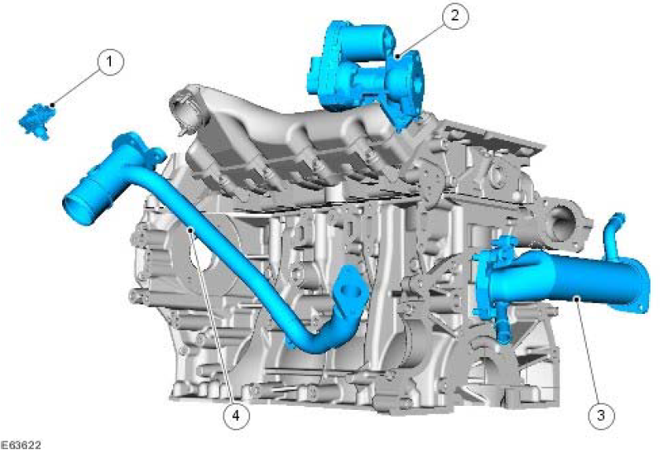
| Item | Part Number | Description |
|---|---|---|
| 1 | MAPT (manifold absolute pressure and temperature) Sensor | |
| 2 | EGR (exhaust gas recirculation) unit | |
| 3 | EGR (exhaust gas recirculation) cooler | |
| 4 | Connecting pipe |
The EGR (exhaust gas recirculation) system comprises:
- EGR (exhaust gas recirculation) modulator x 2
- EGR (exhaust gas recirculation) cooler x 2
- Associated connecting pipes
The EGR (exhaust gas recirculation) modulator and cooler are a combined unit.
The combined EGR (exhaust gas recirculation) modulator and cooler is located under each cylinder bank, between the exhaust manifold and the cylinder head. The cooler side of the EGR (exhaust gas recirculation) is connected to the vehicle cooling system, via hoses. The inlet exhaust side is connected directly into the exhaust manifolds on each side. The exhaust gas passes through the cooler and is expelled via the actuator and a metal pipe into the throttle housing. The EGR (exhaust gas recirculation) modulator is a solenoid operated valve which is controlled by the ECM (engine control module). The ECM (engine control module) uses the EGR (exhaust gas recirculation) modulator to control the amount of exhaust gas being re-circulated in order to reduce exhaust emissions and combustion noise. The EGR (exhaust gas recirculation) is enabled when the engine is at normal operating temperature and under cruising conditions.
The EGR (exhaust gas recirculation) modulator receives a 12V supply from the ECM (engine control module) and is controlled using a PWM (pulse width modulation) signal. The PWM (pulse width modulation) duty signal of the solenoid ground is varied to determine the precise amount of exhaust gas delivered to the cylinders.
The modulators are operated through their full range at each engine shut down, to clear any carbon deposits that may have built up whilst the engine was running
In the event of a failure of the EGR (exhaust gas recirculation) modulator, the EGR (exhaust gas recirculation) function will become inoperative. The ECM (engine control module) can monitor the EGR (exhaust gas recirculation) modulator solenoid for short circuits and store fault codes in the event of failure. The modulator can also be activated for testing using the Land Rover recommended diagnostic tool.
FUEL VOLUME CONTROL VALVE
The fuel rail volume control valve is incorporated into the high pressure fuel pump. The VCV spills unwanted fuel back to the tank (or LP system) or forwards it to the PCV. This avoids unused fuel being pressurized by the HP stage of the pump, only to be spilt back to LP by the PCV wasting energy and heating the fuel.
BRAKE LAMP SWITCHES
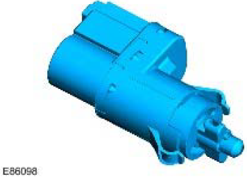
The brake switch is located on the pedal box and is operated by the brake pedal. The switch is a Hall effect switch which detects the position of the brake pedal and determines when the driver has applied the brakes. The switch is connected directly to the ECM (engine control module).
The brake switch consists of an inner sensor in an outer mounting sleeve. To ensure correct orientation, the sensor is keyed to the mounting sleeve and the mounting sleeve is keyed to the pedal mounting bracket. Mating serrations hold the sensor in position in the mounting sleeve. While the brakes are off, the tang on the brake pedal rests against the end of the sensor. When the brake pedal is pressed, the tang moves away from the sensor and induces a change of sensor output voltages. This is sensed by the ECM (engine control module) which detects that the brake pedal has
been applied. The ECM (engine control module) uses the brake signal for the following:
- To limit fueling during braking
- To inhibit/cancel speed control if the brakes are applied.
In the event of a brake switch failure, the following symptoms may be observed:
- Speed control inactive
- Increased fuel consumption.
CLUTCH SWITCH
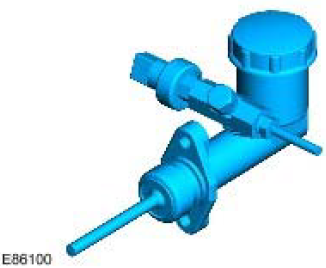
The clutch switch is located on the clutch master cylinder. The clutch switch is a pressure transducer type. When the clutch is depressed the clutch switch sends a signal to the ECM (engine control module) which reduces engine torque.
GENERATOR
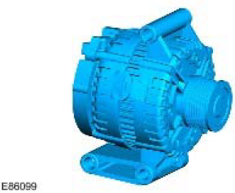
The generator has a multifunction voltage regulator for use in a 14V charging system with 6÷12 zener diode bridge rectifiers.
The ECM (engine control module) monitors the load on the electrical system via PWM (pulse width modulation) signal and adjusts the generator output to match the required load. The ECM (engine control module) also monitors the battery temperature to determine the generator regulator set point. This characteristic is necessary to protect the battery; at low temperatures battery charge acceptance is very poor so the voltage needs to be high to maximize any recharge ability, but at high temperatures the charge voltage must be restricted to prevent excessive gassing of the battery with consequent water loss.
The generator has a smart charge capability that will reduce the electrical load on the generator reducing torque requirements, this is implemented to utilize the engine torque for other purposes. This is achieved by monitoring three signals to the ECM (engine control module) :
- Generator sense (A sense), measures the battery voltage at the CJB (central junction box).
- Generator communication (Alt Com) communicates desired generator voltage set point from ECM (engine control module) to generator.
- Generator monitor (Alt Mon) communicates the extent of generator current draw to ECM (engine control module). This signal also transmits faults to the ECM (engine control module) which will then sends a message to the instrument cluster on the CAN (controller area network) bus to illuminate the charge warning lamp.
CONTROL DIAGRAM
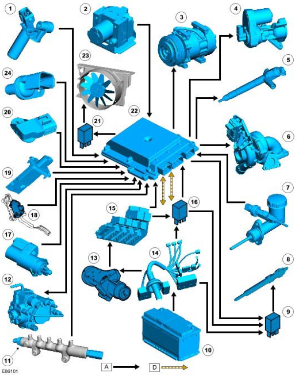
| Item | Part Number | Description |
|---|---|---|
| 1 | CKP (crankshaft position) | |
| 2 | ABS (anti-lock brake system) module | |
| 3 | Air conditioning compressor | |
| 4 | EGR (exhaust gas recirculation) valve | |
| 5 | injectors | |
| 6 | Turbocharger | |
| 7 | Clutch switch | |
| 8 | Glow plugs | |
| 9 | Glow plug relay | |
| 10 | Battery | |
| 11 | Fuel rail pressure sensor | |
| 12 | Fuel pump | |
| 13 | Ignition switch | |
| 14 | BJB (battery junction box) | |
| 15 | CJB (central junction box) | |
| 16 | Glow plug relay | |
| 17 | Brake pedal switch | |
| 18 | APP (accelerator pedal position) | |
| 19 | MAF (mass air flow) /IAT (intake air temperature) sensor | |
| 20 | MAP (manifold absolute pressure) sensor | |
| 21 | Electric fan relay | |
| 22 | ECM (engine control module) | |
| 23 | Cooling fan | |
| 24 | CMP (camshaft position) sensor |
Published: Mar 12, 2007
Electronic Engine Controls
Overview
This section covers the components of the engine management system.
For information on description and operation:
Electronic Engine Controls
Inspection and Verification
- Verify the customer concern.
- Visually inspect for obvious mechanical or electrical faults.
| Mechanical | Electrical |
|---|---|
|
|
- If an obvious cause for an observed or reported concern is found, correct the cause (if possible) before proceeding to the next step.
- Use the approved diagnostic system or a scan tool to retrieve any diagnostic trouble codes (DTCs) before moving onto the symptom chart or DTC index.
Make sure that all DTCs are cleared following rectification.
Make sure that all DTCs are cleared following rectification.
Symptom Chart
| Symptom | Possible causes | Action |
|---|---|---|
| Engine does not crank |
|
Check the starter relay and circuits. Refer to the electrical guides. Check the ignition switch operation. Check for DTCs indicating a CAN fault. |
| Engine cranks, but does not start |
|
Check that the IFS has not tripped. Check the main ECM relay and
circuits, refer to the electrical guides. Check the fuel level and
condition. Draw off approximately 1 ltr (2.11 pints) of fuel and allow to
stand for 1 minute. Check to make sure there is no separation of the
fuel indicating water or other liquid in the fuel. Check the intake air
system for leaks. Check the low-pressure fuel system for
leaks/damage. Check the fuel filter, check for DTCs indicating a fuel
injection pump fault. Check the fuel injection pump: Fuel Injection Pump Check the CKP sensor circuits. Refer to the electrical guides. Install a new CKP sensor if necessary. Crankshaft Position (CKP) Sensor (18.30.12) |
| Difficult to start |
|
Check the glow plug circuits. Refer to the electrical guides. Check the
fuel level/condition. Draw off approximately 1 ltr (2.11 pints) of fuel
and allow to stand for 1 minute. Check to make sure there is no
separation of the fuel indicating water or other liquid in the fuel.
Check the intake air system for leaks. Check the low-pressure fuel
system for leaks/damage. Check the fuel filter, check for DTCs
indicating a fuel injection pump fault. For EGR valve checks: Engine Emission Control |
| Rough idle |
|
Check the intake air system for leaks. Check the fuel level/condition.
Draw off approximately 1 Itr (2.11 pints) of fuel and allow to stand for
1 minute. Check to make sure there is no separation of the fuel
indicating water or other liquid in the fuel. Check the low-pressure
fuel system for leaks/damage. Check the fuel filter, check for DTCs
indicating a fuel injection pump fault. For EGR valve checks: Engine Emission Control |
| Lack of power when accelerating |
|
Check the intake air system for leakage or restriction. Check for a
blockage/restriction in the exhaust system, install new components
as necessary: Catalytic Converter (17.50.01) Check for DTCs indicating a fuel pressure fault. For EGR valve checks: Engine Emission Control For turbocharger actuator checks: Turbocharger (19.42.01) |
| Engine stops/stalls |
|
Check the intake air system for leaks. Check the fuel level/condition.
Draw off approximately 1 ltr (2.11 pints) of fuel and allow to stand for
1 minute. Check to make sure there is no separation of the fuel
indicating water or other liquid in the fuel. Check the fuel system for
leaks/damage. Check for DTCs indicating a fuel injection pump fault.
For EGR valve checks: Engine Emission Control |
| Engine judders |
|
Check the fuel level/condition. Draw off approximately 1 ltr (2.11
pints) of fuel and allow to stand for 1 minute. Check to make sure
there is no separation of the fuel indicating water or other liquid in the
fuel. Check the intake air system for leaks. Check the low-pressure
fuel system for leaks/damage. Check the high-pressure fuel system
for leaks, check for DTCs indicating a fuel injection pump fault. Check
the fuel injection pump: Fuel Injection Pump |
| Excessive fuel consumption |
|
Check the low-pressure fuel system for leaks/damage. Check for
DTCs indicating a fuel injection pump fault. Check the fuel
temperature sensor, fuel injection pump, etc. for leaks. Check for
injector DTCs. For EGR valve checks: Engine Emission Control |
DTC Index
| DTC | Description | Possible causes | Actions |
|---|---|---|---|
| P001600 | Crankshaft position (CKP) sensor - camshaft position (CMP) sensor correlation - bank 1 sensor A |
|
Check the condition and fitment of the
CKP and CMP sensors (refer to the
visual inspection). Check the timing
drive components. Check the CKP and
CMP sensors and circuits. Refer to the
electrical guides. Install a new sensor if
necessary. Crankshaft Position (CKP) Sensor (18.30.12) Camshaft Position (CMP) Sensor (18.30.24) Clear the DTCs and check for normal operation. |
| P004611 | Turbocharger boost control A circuit range/performance - circuit short to ground |
|
Check the turbocharger control solenoid
and circuits. Refer to the electrical
guides. Install a new turbocharger if
necessary. Turbocharger (19.42.01) Clear the DTCs and test for normal operation. |
| P004612 | Turbocharger boost control A circuit range/performance - circuit short to battery |
|
|
| P00461A | Turbocharger boost control A circuit range/performance - circuit resistance below threshold |
|
Check the turbocharger control solenoid and circuits. Refer to the electrical guides. Install a new turbocharger if necessary. Turbocharger (19.42.01) Clear the DTCs and test for normal operation. |
| P00461B | Turbocharger boost control A circuit range/performance - circuit resistance above threshold |
|
|
|
NOTE: The MAP sensor is part
of the manifold absolute
pressure temperature
(MAPT) sensor
|
Check for related DTCs. Rectify as necessary. Using a data logger function check the barometric and manifold absolute pressure readings, both sensors should read approximately atmospheric pressure (ignition on, engine NOT running). A reading significantly higher or lower on one sensor would indicate a sensor fault. Install a new MAPT sensor if necessary. | ||
| P006900 | Manifold absolute pressure (MAP) sensor - barometric pressure correlation |
NOTE: Barometric pressure
sensor is part of the
engine control module
(ECM)
|
Manifold Absolute Pressure and Temperature (MAPT) Sensor Clear the DTCs and check for normal operation. Refer to the warranty policy and procedures manual, if a module is suspect. |
| P006A00 | Manifold absolute pressure (MAP) sensor - mass or volume air flow correlation |
NOTE: The MAP sensor is part
of the manifold absolute
pressure temperature
(MAPT) sensor
|
Check the intake air path for restrictions. Rectify as necessary. Check for DTCs indicating an EGR, turbocharger, MAPT or MAF sensor fault. Rectify as necessary. Clear the DTCs and check for normal operation. |
| P008807 | Fuel rail/system pressure - too high |
|
Check for related DTCs. Rectify as
necessary. Clear the DTCs and test for
normal operation. Check the fuel rail
pressure sensor and circuits. Refer to
the electrical guides. The fuel rail
pressure sensor cannot be serviced
separately. Install a new fuel rail if
necessary. Fuel Rail (19.60.04) Check the fuel suction control valve and circuits. Refer to the electrical guides. The fuel suction control valve is not serviceable separately. Install a new fuel injection pump if necessary. Fuel Injection Pump Clear the DTCs and carry out a road test to confirm repair. |
| P008809 | Fuel rail/system pressure - too high |
|
Check for related DTCs. Rectify as
necessary. Clear the DTCs and test for
normal operation. Check the fuel rail
pressure sensor and circuits. Refer to
the electrical guides. The fuel rail
pressure sensor cannot be serviced
separately. Install a new fuel rail if
necessary. Fuel Rail (19.60.04) Check the fuel suction control valve and circuits. Refer to the electrical guides. The fuel suction control valve is not serviceable separately. Install a new fuel injection pump if necessary. Fuel Injection Pump Clear the DTCs and carry out a road test to confirm repair. |
| P00897A | Fuel pressure regulator performance |
|
The fuel rail pressure limiting valve
operates as a disposable item in the
event of excess system pressure. Once
activated the valve cannot be
guaranteed leak free and should be
replaced. Install a new fuel rail pressure
limiting valve. Fuel Pressure Relief Valve |
| P009111 | Fuel pressure regulator control circuit - circuit short to ground |
|
Check the fuel suction control valve and
circuits. Refer to the electrical guides.
The fuel suction control valve is not
serviceable separately. Install a new
fuel injection pump if necessary. Fuel Injection Pump Clear the DTCs and test for normal operation. |
| P009112 | Fuel pressure regulator control circuit - circuit short to battery |
|
|
| P009211 | Fuel pressure regulator control circuit - circuit short to ground |
|
Check the fuel suction control valve and
circuits. Refer to the electrical guides.
The fuel suction control valve is not
serviceable separately. Install a new
fuel injection pump if necessary. Fuel Injection Pump Clear the DTCs and test for normal operation. |
| P009212 | Fuel pressure regulator control circuit - circuit short to battery |
|
|
| P00952F | Intake air temperature (IAT) sensor 2 circuit - signal erratic |
NOTE: The IAT sensor 2 is part
of the manifold absolute
pressure temperature
(MAPT) sensor
|
Check the IAT sensor 2 and circuits.
Refer to the electrical guides. Install a
new MAPT sensor if necessary. Manifold Absolute Pressure and Temperature (MAPT) Sensor Clear the DTCs and test for normal operation. |
| P009511 | Intake air temperature (IAT) sensor 2 circuit - circuit short to ground |
NOTE: The IAT sensor 2 is part
of the manifold absolute
pressure temperature
(MAPT) sensor
|
|
| P009515 | Intake air temperature (IAT) sensor 2 circuit - circuit short to battery or open |
NOTE: The IAT sensor 2 is part
of the manifold absolute
pressure temperature
(MAPT) sensor
|
|
| P010029 | Mass or volume air flow A circuit - signal invalid |
|
Check the intake air system for leaks, restrictions, etc. Check for related DTCs. Rectify as necessary. Clear the DTCs and test for normal operation. |
| P010036 | Mass or volume air flow A circuit - signal frequency too low |
|
Check the MAF sensor and circuit.
Refer to the electrical guides. Install a
new MAF sensor if necessary. Mass Air Flow (MAF) Sensor (19.22.25) Clear the DTCs and test for normal operation. |
| P010037 | Mass or volume air flow A circuit - signal frequency too high |
|
Check the MAF sensor and circuit.
Refer to the electrical guides. Install a
new MAF sensor if necessary. Mass Air Flow (MAF) Sensor (19.22.25) Clear the DTCs and test for normal operation. |
| P010064 | Mass or volume air flow A circuit - signal plausibility failure |
|
Check the MAF sensor and circuit.
Refer to the electrical guides. Install a
new MAF sensor if necessary. Mass Air Flow (MAF) Sensor (19.22.25) Clear the DTCs and test for normal operation. |
| P01102F | Intake air temperature (IAT) sensor 1 circuit - signal erratic |
NOTE: The IAT sensor 1 is part
of the mass air flow
(MAF) sensor
|
Check the IAT sensor 1 and circuit.
Refer to the electrical guides. Install a
new MAF sensor if necessary. Mass Air Flow (MAF) Sensor (19.22.25) Clear the DTCs and test for normal operation. |
| P011011 | Intake air temperature (IAT) sensor 1 circuit - circuit short to ground |
NOTE: The IAT sensor 1 is part
of the mass air flow
(MAF) sensor
|
Check the IAT sensor 1 and circuit.
Refer to the electrical guides. Install a
new MAF sensor if necessary. Mass Air Flow (MAF) Sensor (19.22.25) Clear the DTCs and test for normal operation. |
| P011015 | Intake air temperature (IAT) sensor 1 circuit - circuit short to battery or open |
NOTE: The IAT sensor 1 is part
of the mass air flow
(MAF) sensor
|
Check the IAT sensor 1 and circuit.
Refer to the electrical guides. Install a
new MAF sensor if necessary. Mass Air Flow (MAF) Sensor (19.22.25) Clear the DTCs and test for normal operation. |
| P01152F | Engine coolant temperature (ECT) (cylinder head temperature (CHT)) sensor 1 circuit - signal erratic |
|
Check the CHT sensor and circuit.
Refer to the electrical guides. Install a
new CHT sensor if necessary. Cylinder Head Temperature (CHT) Sensor Clear the DTCs and test for normal operation. |
| P011516 | Engine coolant temperature (ECT) (cylinder head temperature (CHT)) sensor 1 circuit - circuit voltage below threshold |
|
|
| P011517 | Engine coolant temperature (ECT) (cylinder head temperature (CHT)) sensor 1 circuit - circuit voltage above threshold |
|
|
| P01208F | Throttle/pedal position sensor A circuit - accelerator pedal position (APP) sensor track 1 - erratic |
|
Check the APP sensor and circuits.
Refer to the electrical guides. Rectify as
necessary. Install a new APP sensor if
necessary. Accelerator Pedal Position (APP) Sensor (19.22.49) Clear the DTCs and test for normal operation. |
| P012084 | Throttle/pedal position sensor A circuit - accelerator pedal position (APP) sensor track 1 - signal below allowable range |
|
|
| P012085 | Throttle/pedal position sensor A circuit - accelerator pedal position (APP) sensor track 1 - signal above allowable range |
|
|
| P01802F | Fuel temperature sensor A circuit - signal erratic |
|
Check the fuel temperature sensor and
circuits. Refer to the electrical guides.
The fuel temperature sensor is not
serviceable separately. Install a new
fuel injection pump if necessary. Fuel Injection Pump Clear the DTCs and test for normal operation. |
| P018011 | Fuel temperature sensor A circuit - circuit short to ground |
|
|
| P018015 | Fuel temperature sensor A circuit - circuit short to battery or open |
|
|
| P019011 | Fuel rail pressure sensor A circuit - circuit short to ground |
|
Check the fuel rail pressure sensor and
circuits. Refer to the electrical guides.
The fuel rail pressure sensor is not
serviceable separately. Install a new
fuel rail if necessary. Fuel Rail (19.60.04) Clear the DTCs and test for normal operation. |
| P019015 | Fuel rail pressure sensor A circuit - circuit short to battery or open |
|
Check the fuel rail pressure sensor and
circuits. Refer to the electrical guides.
The fuel rail pressure sensor is not
serviceable separately. Install a new
fuel rail if necessary. Fuel Rail (19.60.04) Clear the DTCs and test for normal operation. |
| P019164 | Fuel rail pressure sensor A circuit range/performance - signal plausibility failure |
|
Check the fuel rail pressure sensor and
circuits. Refer to the electrical guides.
The fuel rail pressure sensor is not
serviceable separately. Install a new
fuel rail if necessary. Fuel Rail (19.60.04) Clear the DTCs and test for normal operation. |
| P020011 | Injector circuit - circuit short to ground |
|
Check the injector and injector circuit.
Refer to the electrical guides. Install a
new injector if necessary. Fuel Injector (19.60.10) Clear the DTCs and test for normal operation. |
| P020012 | Injector circuit - circuit short to battery |
|
|
| P020100 | Cylinder 1 (injector 1) circuit / open |
|
Check the cylinder 1 injector and circuit.
Refer to the electrical guides. Install a
new injector if necessary. Fuel Injector (19.60.10) Clear the DTCs and test for normal operation. |
| P020200 | Cylinder 2 (injector 4) circuit / open |
|
Check the cylinder 2 injector and circuit.
Refer to the electrical guides. Install a
new injector if necessary. Fuel Injector (19.60.10) Clear the DTCs and test for normal operation. |
| P020300 | Cylinder 3 (injector 2) circuit / open |
|
Check the cylinder 3 injector and circuit.
Refer to the electrical guides. Install a
new injector if necessary. Fuel Injector (19.60.10) Clear the DTCs and test for normal operation. |
| P020400 | Cylinder 4 (injector 3) circuit / open |
|
Check the cylinder 4 injector and circuit.
Refer to the electrical guides. Install a
new injector if necessary. Fuel Injector (19.60.10) Clear the DTCs and test for normal operation. |
| P022000 | Accelerator pedal position (APP) sensor/switch B circuit |
|
Check the APP sensor and circuits.
Refer to the electrical guides. Rectify as
necessary. Install a new APP sensor if
necessary. Accelerator Pedal Position (APP) Sensor (19.22.49) Clear the DTCs and test for normal operation. |
| P02202F | Accelerator pedal position (APP) sensor/switch B circuit - signal erratic |
|
|
| P023400 | Turbocharger A over boost condition |
|
Check the turbocharger and circuits.
Refer to the electrical guides. Rectify as
necessary. Check turbocharger
operation, check for sticking
turbocharger vanes etc. Install a new
turbocharger if necessary. Turbocharger (19.42.01) Clear the DTCs and test for normal operation. Refer to the warranty policy and procedures manual if a module is suspect. |
| P023521 | Turbocharger boost sensor A circuit - signal amplitude less than minimum |
NOTE: The MAP sensor is part
of the manifold absolute
pressure temperature
(MAPT) sensor
|
Check the MAPT sensor and circuit.
Refer to the electrical guides. Install a
new MAPT sensor if necessary. Manifold Absolute Pressure and Temperature (MAPT) Sensor Clear the DTCs and test for normal operation. |
| P023522 | Turbocharger boost sensor A circuit - signal amplitude greater than maximum |
NOTE: The MAP sensor is part
of the manifold absolute
pressure temperature
(MAPT) sensor
|
|
| P02352F | Turbocharger boost sensor A circuit - signal erratic |
NOTE: The MAP sensor is part
of the manifold absolute
pressure temperature
(MAPT) sensor
|
|
| P026100 | Cylinder 1 (injector 1) circuit low |
|
Check the cylinder 1 injector and circuit.
Refer to the electrical guides. Install a
new injector if necessary. Fuel Injector (19.60.10) Clear the DTCs and test for normal operation. |
| P026400 | Cylinder 2 (injector 4) circuit low |
|
Check the cylinder 2 injector and circuit.
Refer to the electrical guides. Install a
new injector if necessary. Fuel Injector (19.60.10) Clear the DTCs and test for normal operation. |
| P026700 | Cylinder 3 (injector 2) circuit low |
|
Check the cylinder 3 injector and circuit.
Refer to the electrical guides. Install a
new injector if necessary. Fuel Injector (19.60.10) Clear the DTCs |
| P027000 | Cylinder 4 (injector 3) circuit low |
|
and test for normal operation. Check the cylinder 4 injector and circuit. Refer to the electrical guides. Install a new injector if necessary. Fuel Injector (19.60.10) Clear the DTCs and test for normal operation. |
| P029900 | Turbocharger A under boost condition |
|
Check the turbocharger and circuits.
Refer to the electrical guides. Rectify as
necessary. Check turbocharger
operation, check for sticking
turbocharger vanes etc. Install a new
turbocharger if necessary. Turbocharger (19.42.01) Clear the DTCs and test for normal operation. Refer to the warranty policy and procedures manual if a module is suspect. |
| P029C00 | Cylinder 1 balance - (injector 1) restricted |
|
Check the injector and surrounding area
for evidence of fuel leakage. Disconnect
the injector and check for evidence of
fuel leakage in the connector. Rectify as
necessary. Clear the DTCs. Reconnect
the injector and start the engine. Allow
to warm up and allow to idle (cylinder
balance diagnosis is now active). If the
DTC resets, check for blow-by etc. and
rectify as necessary. Clear the DTCs
and recheck. Carry out a compression
test only if the DTC resets. If the above
tests are all within range, install a new
injector. Fuel Injector (19.60.10) Clear the DTCs and test for normal operation. |
| P02A000 | Cylinder 2 balance - (injector 4) restricted |
|
Check the injector and surrounding area
for evidence of fuel leakage. Disconnect
the injector and check for evidence of
fuel leakage in the connector. Rectify as
necessary. Clear the DTCs. Reconnect
the injector and start the engine. Allow
to warm up and allow to idle (cylinder
balance diagnosis is now active). If the
DTC resets, check for blow-by etc. and
rectify as necessary. Clear the DTCs
and recheck. Carry out a compression
test only if the DTC resets. If the above
tests are all within range, install a new
injector. Fuel Injector (19.60.10) Clear the DTCs and test for normal operation. |
| P02A400 | Cylinder 3 balance - (injector 2) restricted |
|
Check the injector and surrounding area
for evidence of fuel leakage. Disconnect
the injector and check for evidence of
fuel leakage in the connector. Rectify as
necessary. Clear the DTCs. Reconnect
the injector and start the engine. Allow
to warm up and allow to idle (cylinder
balance diagnosis is now active). If the
DTC resets, check for blow-by etc. and
rectify as necessary. Clear the DTCs
and recheck. Carry out a compression
test only if the DTC resets. If the above
tests are all within range, install a new
injector. Fuel Injector (19.60.10) Clear the DTCs and test for normal operation. |
| P02A800 | Cylinder 4 balance - (injector 3) restricted |
|
Check the injector and surrounding area
for evidence of fuel leakage. Disconnect
the injector and check for evidence of
fuel leakage in the connector. Rectify as necessary. Clear the DTCs. Reconnect
the injector and start the engine. Allow
to warm up and allow to idle (cylinder
balance diagnosis is now active). If the
DTC resets, check for blow-by etc. and
rectify as necessary. Clear the DTCs
and recheck. Carry out a compression
test only if the DTC resets. If the above
tests are all within range, install a new
injector. Fuel Injector (19.60.10) Clear the DTCs and test for normal operation. |
| P033529 | Condition and fitment of the crankshaft position (CKP) sensor A circuit - signal invalid |
|
Check the CKP sensor and circuits.
Refer to the electrical guides. Check the
sensor and wheel for correct installation
and condition. Rectify as necessary.
Install a new CKP sensor if necessary. Crankshaft Position (CKP) Sensor (18.30.12) Camshaft Position (CMP) Sensor (18.30.24) Clear the DTCs and check for normal operation. |
| P033531 | Condition and fitment of the crankshaft position (CKP) sensor A circuit - no signal |
|
|
| P034023 | Camshaft position (CMP) sensor A circuit (bank 1 or single sensor) - signal stuck low |
|
Check the CMP sensor and circuits.
Refer to the electrical guides. Install a
new CMP sensor if necessary. Camshaft Position (CMP) Sensor (18.30.24) Clear the DTCs and test for normal operation. |
| P034024 | Camshaft position sensor (CMP) A circuit (bank 1 or single sensor) - signal stuck high |
|
|
| P037D29 | Glow plug relay sensor circuit - signal invalid |
|
Check the relay and circuits. Refer to the electrical guides. Activate the relay and check for an audible "click". Rectify as necessary. Clear the DTCs and test for normal operation. |
| P038011 | Glow plug/heater circuit A - circuit short to ground |
|
Check the relay and circuits. Refer to the electrical guides. Activate the relay and check for an audible "click". Rectify as necessary. Clear the DTCs and test for normal operation. |
| P038015 | Glow plug/heater circuit A - circuit short to battery or open |
|
|
| P04031A | Exhaust gas recirculation (EGR) control circuit - circuit resistance below threshold |
|
Check the EGR control valve actuator and circuits. Refer to the electrical guides. Install a new EGR valve if necessary. Exhaust Gas Recirculation (EGR) Valve (17.45.01) Clear the DTCs and test for normal operation. |
| P04031B | Exhaust gas recirculation (EGR) control circuit - circuit resistance above threshold |
|
|
| P040311 | Exhaust gas recirculation (EGR) control circuit - circuit short to ground |
|
|
| P040312 | Exhaust gas recirculation (EGR) control circuit - circuit short to battery |
|
|
| P040472 | Exhaust gas recirculation (EGR) control circuit range/performance - actuator stuck open |
|
Check the EGR control valve actuator
and circuits. Refer to the electrical
guides. Install a new EGR valve if
necessary. Exhaust Gas Recirculation (EGR) Valve (17.45.01) Clear the DTCs and test for normal operation. |
| P040473 | Exhaust gas recirculation (EGR) control circuit range/performance - actuator stuck closed |
|
|
| P048000 | Fan 1 control circuit on/off |
|
Check the cooling fan and circuits.
Refer to the electrical guides. Install a
new cooling fan if necessary. Cooling Fan (26.25.19) Clear the DTCs and test for normal operation. |
| P05032F | Vehicle speed sensor (VSS) A intermittent/erratic/high - signal erratic |
|
Check for instrument cluster related DTCs. Rectify as necessary. Check the VSS sensor and circuits. Refer to the electrical guides. Rectify as necessary. Clear the DTCs and test for normal operation. |
| P050337 | Vehicle speed sensor (VSS) A intermittent/erratic/high - signal frequency too high |
|
Check for instrument cluster related DTCs. Rectify as necessary. Check the VSS sensor and circuits. Refer to the electrical guides. Rectify as necessary. Clear the DTCs and test for normal operation. |
| P052015 | Engine oil pressure (EOP) sensor switch circuit - circuit short to battery or open |
|
Check the EOP sensor/switch and
circuits. Refer to the electrical guides.
Install a new EOP sensor if necessary. Engine Oil Pressure (EOP) Sensor (12.60.50) Clear the DTCs and test for normal operation. |
| P056200 | System voltage low |
|
Check the battery condition and state of
charge. Check the charging system.
Install a new generator if necessary. Generator (86.10.02) Clear the DTCs and test for normal operation. |
| P056300 | System voltage high |
|
|
| P057100 | Brake switch A circuit |
|
Check the brake switch and circuits. Refer to the electrical guides. Install a new brake switch if necessary. Clear the DTCs and test for normal operation Refer to the electrical guides. Install a new brake switch if necessary. Clear the DTCs and test for normal operation. |
| P060200 | Engine control module (ECM) programming error |
|
Reprogramme the module using the approved diagnostic system. Refer to the warranty policy and procedures manual if a module is suspect. |
| P060543 | Internal control module read only memory (ROM) error - special memory failure |
|
Reprogramme the module using the approved diagnostic system. Refer to the warranty policy and procedures manual if a module is suspect. |
| P060554 | Internal control module read only memory (ROM) error - missing calibration |
|
|
| P060616 | Engine control module (ECM) processor - circuit voltage below threshold |
|
Refer to the warranty policy and procedures manual if the ECM is suspect. |
| P060647 | Engine control module (ECM) processor - watchdog failure |
|
|
| P060649 | Engine control module (ECM) processor- internal electronic failure |
|
|
| P060696 | Engine control module (ECM) processor - component internal failure |
|
|
| P061000 | Control module vehicle options error |
|
Check tyre sizes are of the correct specification. Rectify as necessary. Check correct central car configuration software is installed. Reprogramme the module as necessary. |
| P061512 | Starter relay circuit - circuit short to battery |
|
Check the starter relay circuits. Refer to the electrical guides. Rectify as necessary. Clear the DTCs and test for normal operation. |
| P061514 | Starter relay circuit - circuit short to ground or open |
|
|
| P062211 | Generator field terminal circuit - circuit short to ground |
|
Check the charging voltage. Check the
charging system circuits. Refer to the
electrical guides. Install a new generator
if necessary. Generator (86.10.02) Clear the DTCs and test for normal operation. |
| P062215 | Generator field terminal circuit - circuit short to battery or open |
|
|
| P062300 | Generator lamp control circuit |
|
Check the charging voltage. Install a
new accessory drive belt if necessary. Accessory Drive Belt (86.10.03) Check the charging system circuits. Check the generator lamp control circuit. Refer to the electrical guides. Install a new generator if necessary. Generator (86.10.02) Clear the DTCs and test for normal operation. |
| P062B16 | Internal control module fuel injector control performance - circuit voltage below threshold |
|
Refer to the warranty policy and procedures manual if the ECM is suspect. |
| P062B17 | Internal control module fuel injector control performance - circuit voltage above threshold |
|
|
| P064200 | Sensor reference voltage A circuit low (internal to engine control module (ECM)) |
|
Check the ECM power supply and relay circuits. Refer to the electrical guides. Rectify as necessary. Clear the DTC. Cycle the ignition and retest. If the DTC resets suspect the ECM. Refer to the warranty policy and procedures manual if a module is suspect. |
| P064300 | Sensor reference voltage A circuit low (internal to engine control module (ECM)) |
|
Check the ECM power supply and relay circuits. Refer to the electrical guides. Rectify as necessary. Clear the DTC. Cycle the ignition and retest. If the DTC resets suspect the ECM. Refer to the warranty policy and procedures manual if a module is suspect. |
| P064523 | Air conditioning (A/C) clutch relay control circuit - signal stuck low |
|
Check A/C clutch relay and circuits. Refer to the electrical guides. Rectify as necessary. Clear the DTCs and test for normal operation. |
| P064524 | Air conditioning (A/C) clutch relay control circuit - signal stuck high |
|
|
| P065116 | Sensor reference voltage B circuit / open circuit voltage below threshold |
|
Refer to the warranty policy and procedures manual if the ECM is suspect. |
| P065117 | Sensor reference voltage B circuit / open-circuit voltage above threshold |
|
|
| P06662F | Engine control module (ECM) internal temperature sensor circuit -signal erratic |
|
Check for related DTCs. Rectify as necessary. Clear the DTCs and test for normal operation. Refer to the warranty policy and procedures manual if a module is suspect. |
| P066621 | Engine control module (ECM) internal temperature sensor circuit - signal amplitude less than minimum |
|
|
| P066622 | Engine control module (ECM) internal temperature sensor circuit - signal amplitude greater than maximum |
|
|
| P068A00 | Engine control module (ECM) power relay de-energized - too early |
|
Check the ECM power relay power supply and relay circuits. Refer to the electrical guides. Rectify as necessary. Clear the DTC and test for normal operation. |
| P068B00 | Engine control module (ECM) power relay de-energized - too late |
|
|
| P068516 | Engine control module (ECM) power relay control circuit/open circuit voltage below threshold |
|
Refer to the warranty policy and procedures manual if the ECM is suspect. |
| P068596 | Engine control module (ECM) power relay control circuit/open component internal failure |
|
|
| P070464 | Clutch switch input circuit - signal plausibility failure |
|
Check the clutch switch and circuits. Refer to the electrical guides. Clear the DTCs and test for normal operation. |
| P110200 | Mass air flow (MAF) sensor in range but lower than expected |
|
Check the intake air system for leaks, restrictions, etc. Check the MAF sensor and circuits. Refer to the electrical guides. Install a new MAF sensor if necessary. Mass Air Flow (MAF) Sensor (19.22.25) Clear the DTCs and test for normal operation. |
| P110300 | Mass air flow (MAF) sensor in range but higher than expected |
|
Check the intake air system for leaks,
restrictions, etc. Check the MAF sensor
and circuits. Refer to the electrical
guides. Install a new MAF sensor if
necessary. Mass Air Flow (MAF) Sensor (19.22.25) Clear the DTCs and test for normal operation. |
| P115A00 | Low fuel level - forced limited power |
|
Check that there is sufficient fuel in the
tank. Check the fuel level sensor and
circuits. Refer to the electrical guides.
Install a new fuel level sensor if
necessary. Fuel Level Sender Clear the DTCs and test for normal operation. |
| P115B00 | Low fuel level - forced engine shutdown |
|
|
| P116900 | Fuel rail pressure sensor in range but high |
|
Check the fuel rail pressure sensor and
circuits. Refer to the electrical guides.
The fuel rail pressure sensor is not
serviceable separately. Install a new
fuel rail if necessary. Fuel Rail (19.60.04) Clear the DTCs and test for normal operation. |
| P121C00 | Cylinder balance - injector leaking |
|
Check the injector and surrounding area
for evidence of fuel leakage. Disconnect
the injector and check for evidence of
fuel leakage in the connector. Rectify as
necessary. Clear the DTCs. Reconnect
the injector and start the engine. Allow
to warm up and allow to idle (cylinder
balance diagnosis is now active). If the
DTC resets, check for blow-by etc. and
rectify as necessary. Clear the DTCs
and recheck. Carry out a compression
test only if the DTC resets. If the above
tests are all within range, install a new
injector. Fuel Injector (19.60.10) |
| P12402F | Sensor power supply - signal erratic (internal to engine control module (ECM)) |
|
Check the ECM power supply and relay circuits. Refer to the electrical guides. Rectify as necessary. Clear the DTC. Cycle the ignition and retest. If the DTC resets suspect the ECM. Refer to the warranty policy and procedures manual if a module is suspect. |
| P124633 | Generator load input - signal low time greater than maximum |
|
Check the ECM - generator circuits.
Refer to the electrical guides. Rectify as
necessary. Install a new generator if
necessary. Generator (86.10.02) Clear the DTCs and test for normal operation. |
| P124635 | Generator load input - signal high time greater than maximum |
|
|
| P124636 | Generator load input - signal frequency too low |
|
|
| P124637 | Generator load input - signal frequency too high |
|
|
| P129300 | Injector high side open - cylinders 1 or 4 (injectors 1 or 3) |
|
Check the fuel injectors and circuits.
Refer to the electrical guides. Install a
new injector if necessary. Fuel Injector (19.60.10) Clear the DTCs and test for normal operation. |
| P129400 | Injector high side open - cylinders 2 or 3 (injectors 4 or 2) |
|
Check the fuel injectors and circuits.
Refer to the electrical guides. Install a
new injector if necessary. Fuel Injector (19.60.10) Clear the DTCs and test for normal operation. |
| P14022F | Exhaust gas recirculation (EGR) control valve metering orifice restricted - signal erratic |
|
Check the EGR valve actuator and
circuits. Refer to the electrical guides.
Install a new EGR valve if necessary. Exhaust Gas Recirculation (EGR) Valve (17.45.01) Clear the DTCs and test for normal operation. |
| P140216 | Exhaust gas recirculation (EGR) control valve - circuit voltage below threshold |
|
|
| P140217 | Exhaust gas recirculation (EGR) control valve - circuit voltage above threshold |
|
|
| P140977 | Exhaust gas recirculation (EGR) control valve vacuum regulator solenoid circuit - commanded position not reachable |
|
|
| P164387 | Controller area network (CAN) link engine control module/transmission control module circuit/network - missing CAN signal high / low switch. |
|
Check the transmission high/low switch
and circuits. Refer to the electrical
guides. Rectify as necessary. Install a
new transmission high - low switch if
necessary. Transfer Case Low Range Indicator Switch Check the CAN circuits. Refer to the electrical guides. Rectify as necessary. |
| P167B00 | Fuel injector learning not done |
|
Run pilot correction learning function in line with service procedures. Clear the DTCs and test for normal operation. Refer to the warranty policy and procedures manual if the ECM is suspect. |
| P167B41 | Fuel injector learning not done general checksum failure |
|
|
| P193512 | Brake switch sensor signal - circuit short to battery |
|
Check the brake switch and circuits. Refer to the electrical guides. Clear the DTCs and test for normal operation. |
| P193514 | Brake switch sensor signal - circuit short to ground or open |
|
|
| P213564 | Throttle/pedal position sensor/switch A / B voltage correlation - accelerator pedal position (APP) sensor track 1 voltage does not match accelerator pedal position (APP) sensor track 2 - signal plausibility failure |
|
Check APP sensor and circuits. Refer to
the electrical guides. Rectify as
necessary. Install a new APP sensor if
necessary. Accelerator Pedal Position (APP) Sensor (19.22.49) Clear the DTCs and test for normal operation. |
| P214716 | Fuel injector group A supply voltage circuit low - injector boost voltage too low |
|
Clear the DTC. Start the engine and retest. Refer to the warranty policy and procedures manual if the ECM is suspect. |
| P214817 | Fuel injector group A supply voltage circuit high - injector boost voltage too high |
|
Clear the DTC. Start the engine and retest. Refer to the warranty policy and procedures manual if the ECM is suspect. |
| P215B64 | Vehicle speed - output shaft speed (OSS) (vehicle speed sensor (VSS) correlation - signal plausibility failure |
|
Check for instrument cluster related DTCs. Rectify as necessary. Check the VSS sensor and circuits. Refer to the electrical guides. Rectify as necessary. Clear the DTCs and test for normal operation. |
| P22262F | Barometric pressure circuit - signal erratic |
NOTE: Barometric pressure
sensor is part of the
engine control module
(ECM)
|
Refer to the warranty policy and procedures manual, if the ECM is suspect |
| P222616 | Barometric pressure circuit - circuit voltage below threshold |
NOTE: Barometric pressure
sensor is part of the
engine control module
(ECM)
|
. |
| P222617 | Barometric pressure circuit - circuit voltage above threshold |
NOTE: Barometric pressure
sensor is part of the
engine control module
(ECM)
|
|
| P256234 | Turbocharger boost control position sensor A circuit - signal high time less than minimum |
|
Check turbocharger sensor and circuit.
Refer to the electrical guides. Install a
new turbocharger if necessary. Turbocharger (19.42.01) Clear the DTCs and test for normal operation. |
| P256235 | Turbocharger boost control position sensor A circuit - signal high time greater than maximum |
|
|
| P256236 | Turbocharger boost control position sensor A circuit - signal frequency too low |
|
|
| P256237 | Turbocharger boost control position sensor A circuit - signal frequency too high |
|
|
| P25632F | Turbocharger boost control position sensor A circuit range/performance - signal erratic |
|
|
| P256372 | Turbocharger boost control position sensor A circuit range/performance - actuator stuck open |
|
|
| P256373 | Turbocharger boost control position sensor A circuit range/performance - actuator stuck closed |
|
|
| P263507 | Fuel pump A low flow / performance | Fuel supply pump insufficient flow | Check for related DTCs. Rectify as
necessary. Clear the DTCs and test for
normal operation. Check the fuel suction
control valve and circuits. Refer to the
electrical guides. The fuel suction
control valve is not serviceable
separately. Install a new fuel injection
pump if necessary. Fuel Injection Pump Clear the DTCs and test for normal operation. |
| P268B00 | High-pressure fuel pump calibration not learned/programmed | Pump learning procedure not run | Run pump learning procedure |
| P268C00 | Cylinder 1 (injector 1) data incompatible |
|
Re-enter the injector codes using the approved diagnostic system. Clear the DTCs, test for normal operation. |
| P268D00 | Cylinder 3 (injector 2) data incompatible |
|
|
| P268E00 | Cylinder 4 (injector 3) data incompatible |
|
|
| P268F00 | Cylinder 2 (injector 4) data incompatible |
|
|
| U000188 | High speed controller area network (CAN) communication bus - bus off |
|
Carry out a complete vehicle read for DTCs indicating a CAN circuit or module fault. Rectify as necessary. Refer to the warranty policy and procedures manual if a module is suspect. |
| U015500 | Lost communication with instrument cluster |
|
Check for other controller area network (CAN) DTCs or apparently unrelated customer complaints. Carry out a complete vehicle DTC read. Check the CAN circuits. Refer to the electrical guides. Rectify as necessary. Clear the DTCs and test for normal operation. |
| U030000 | Internal control module software incompatibility |
|
Check that the modules are correct for the vehicle and that the correct level of software is installed. Reconfigure the CAN system. Check the CAN circuits. Refer to the electrical guides. Rectify as necessary. |
| U210087 | Initial configuration not complete - missing message |
|
Check for other controller area network (CAN) DTCs or apparently unrelated customer complaints. Carry out a complete vehicle DTC read. Check the CAN circuits. Refer to the electrical guides. Rectify as necessary. Clear the DTCs and test for normal operation. Check correct central car configuration software is installed. Reprogramme the module as necessary. |
| U210100 | Control module configuration incompatible |
|
Check correct central car configuration software is installed. Reprogramme the module as necessary. |
Published: Feb 15, 2007
Accelerator Pedal Position (APP) Sensor (19.22.49)
Removal
- With assistance, release the accelerator pedal position (APP) sensor from the bulkhead.
- Remove the 2 bolts.
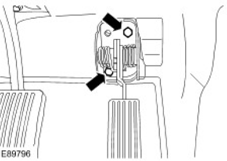
Accelerator pedal position (APP) sensor bolts (E89796) - Remove the APP sensor.
- Disconnect the APP sensor electrical connector.
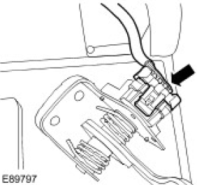
APP sensor electrical connector (E89797)
Installation
- To install, reverse the removal procedure.
- Tighten to 25 Nm (18 lb.ft).
APP sensor installation (E89796)
Published: Jan 4, 2007
Camshaft Position (CMP) Sensor (18.30.24)
Removal
- Disconnect the camshaft position (CMP) sensor electrical connector.
- Remove the CMP sensor.
- Remove the bolt.
- Remove and discard the O-ring seal.
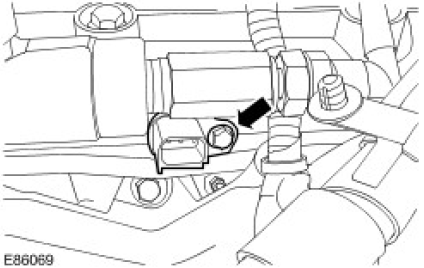
CMP sensor removal (E86069)
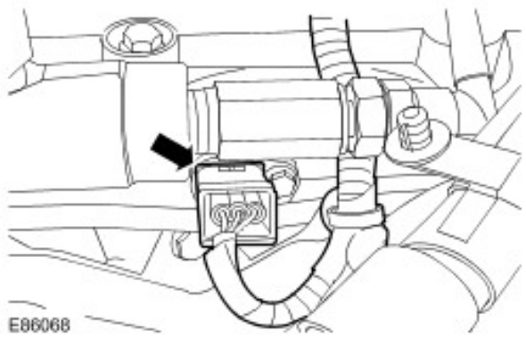
Installation
-
NOTE: Install a new O-ring seal.
To install, reverse the removal procedure.
- Tighten to 9 Nm (7 lb.ft).
CMP sensor installation (E86069)
Published: Jan 4, 2007
Crankshaft Position (CKP) Sensor (18.30.12)
Removal
- Remove the cover.
- Disconnect the crankshaft position (CKP) sensor electrical connector.
- Remove and discard the CKP sensor.
- Remove the bolt.
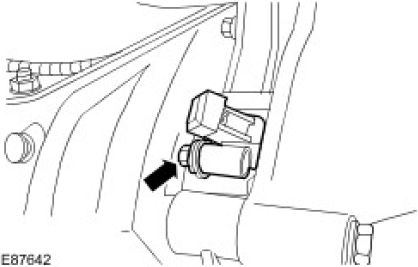
CKP sensor removal (E87642)
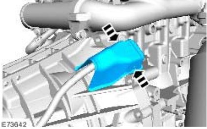
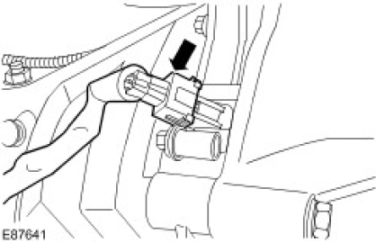
Installation
-
NOTE: Only turn the engine in the normal direction of rotation.
Turn the engine until a flywheel trigger tooth is visible through the CKP sensor housing.
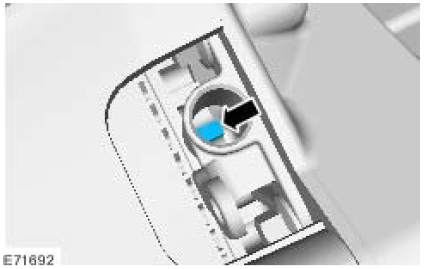
-
 CAUTION: The CKP sensor tip must rest on a flywheel trigger tooth. Incorrect installation
may result in the CKP sensor being damaged.NOTE: Make sure that the CKP sensor housing is clean and free from foreign material.
CAUTION: The CKP sensor tip must rest on a flywheel trigger tooth. Incorrect installation
may result in the CKP sensor being damaged.NOTE: Make sure that the CKP sensor housing is clean and free from foreign material.Install the CKP sensor.
- Tighten to 7 Nm.
CKP sensor installation (E87642) - Connect the CKP sensor electrical connector.
- Install the cover.
Cylinder Head Temperature (CHT) Sensor
Special Service Tools
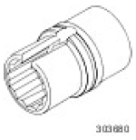
Removal
- Remove the engine cover.
For additional information, refer to Engine Cover (12.30.50) - Disconnect the cylinder head temperature (CHT) sensor.
- Release the CHT sensor wiring harness.
- Using the special tool, remove the CHT sensor.
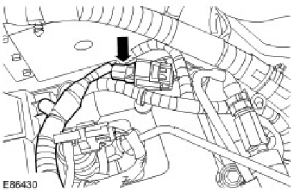
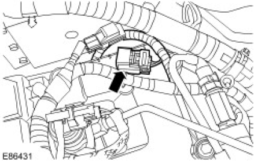
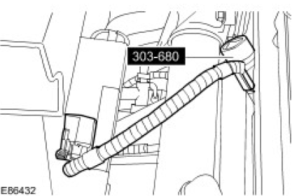
Installation
- To install, reverse the removal procedure.
- Tighten to 10 Nm (7 lb.ft).
CHT sensor installation (EB6432)
Published: Apr 16, 2007
Engine Control Module (ECM) (18.30.03)
Removal
CAUTION: When a new engine control module (ECM) is installed, the Land Rover approved
diagnostic system must be connected to the vehicle and the ECM renewal procedure must be followed. This
will allow the vehicle configuration to be uploaded into the new ECM.
- Disconnect the battery ground cable.
For additional information, refer to Battery Disconnect and Connect - Remove the engine control module (ECM) security bracket.
- Remove the bolt.
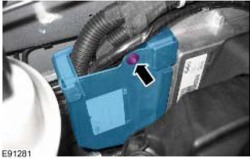
ECM security bracket bolt (E91281) - Disconnect the 3 electrical connectors.
- Remove the 2 ECM nuts.
- Remove the ECM.
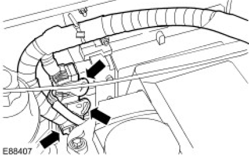
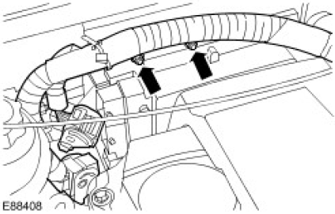
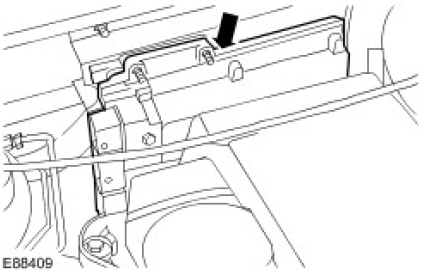
Installation
- To install, reverse the removal procedure.
- Tighten to 10 Nm (7 lb.ft).
ECM installation (E88408) - Using the Land Rover approved diagnostic system, configure the new ECM.
Published: Dec 22, 2006
Engine Oil Pressure (EOP) Sensor (12.60.50)
Removal
- Raise and support the vehicle.
For additional information, refer to Lifting - Disconnect the engine oil pressure (EOP) sensor electrical connector
- Remove the EOP sensor.
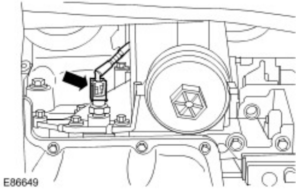
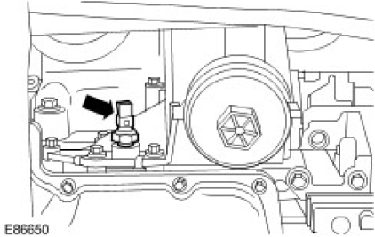
Installation
- Install the EOP sensor.
- Tighten to 15 Nm (11 lb.ft).
- Connect the EOP sensor electrical connector.
Published: Feb 1, 2007
Manifold Absolute Pressure and Temperature (MAPT) Sensor
Removal
- Disconnect the manifold absolute pressure and temperature (MAPT) sensor electrical connector.
-
CAUTION: Make sure that all openings are sealed. Use new blanking caps.
Remove the MAPT sensor.
- Remove the bolt.
- Remove and discard the O-ring seal.
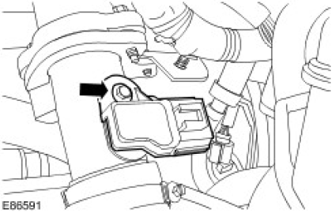
MAPT sensor removal (E86591)
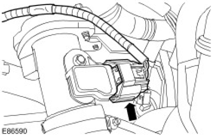
Installation
-
NOTE: Remove and discard the blanking caps.NOTE: Install a new O-ring seal.
To install, reverse the removal procedure.
- Tighten to 3 Nm (2 lb.ft).
Published: Jan 4, 2007
Mass Air Flow (MAF) Sensor (19.22.25)
Removal
- Disconnect the mass air flow (MAF) sensor electrical connector.
- Remove the MAF sensor.
- Remove the 2 screws.
- Remove and discard the O-ring seal.
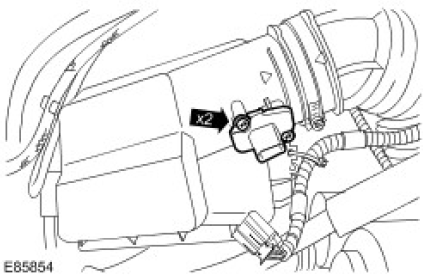
MAF sensor removal (E85854)
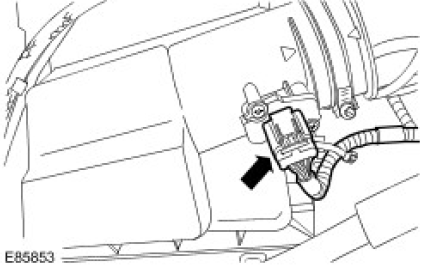
Installation
-
NOTE: Install a new O-ring seal.
To install, reverse the removal procedure.